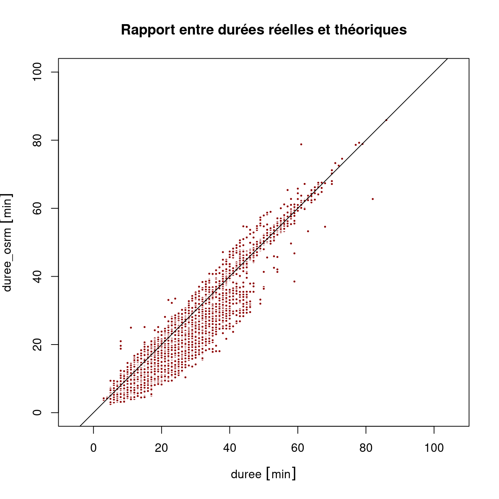

dir.create("data-raw")
cov_2022_09 <- "https://www.data.gouv.fr/fr/datasets/r/513862ee-8e8e-426b-9b67-7a4e39ab253a"
download.file(cov_2022_09, destfile = "data-raw/cov_2022_09.csv")Faire des cartes avec le logiciel libre R
Journée d’étude ‘La boîte à outils de cartographie et de géovisualisation de données : regards croisés de chercheurs’
Timothée Giraud ![]()
1 Introduction
Historique et principes de l’outil utilisé
Fonctionnalités principales
Usages actuels (montrer quelques supers exemples)
Vos usages de cet outil (quelques exemples de vos réalisations)
Préparation des données
Modes de représentations (cartes et graphiques)
Mode d’interactions avec les données
Usages potentiels qu’on a pas eu le temps d’explorer
Bilan personnel de l’outil (forces et limites) dans l’offre actuelle
2 Préparation des données
2.1 Téléchargement des données
2.2 Import des données
cov_raw <- read.csv(file = "data-raw/cov_2022_10.csv", sep = ";")
cov <- cov_raw2.3 Nettoyage
Suppression des trajets sans durée ni distance renseignées
cov <- cov_raw[cov_raw$journey_distance != 0 &
cov_raw$journey_duration != 0, ]3 Analyses
3.1 Analyse des durées, distances et vitesses
3.1.1 Calcul des indicateurs, gestion des unités de mesure
duree <- cov$journey_duration
distance <- cov$journey_distance
library(units)
units(distance) <- "m"
units(duree) <- "min"
distance <- set_units(distance, "km")
duree <- set_units(duree, "h")
vitesse <- distance / duree3.1.2 Représentations
summary_table <- data.frame(
rbind(summary(duree),
summary(distance),
summary(vitesse)),
row.names = c("Durée (h)", "Distance (km)", "Vitesse (km/h)"),
check.names = FALSE
)
knitr::kable(summary_table, digits = 1)| Min. | 1st Qu. | Median | Mean | 3rd Qu. | Max. | |
|---|---|---|---|---|---|---|
| Durée (h) | 0.0 | 0.3 | 0.4 | 0.5 | 0.6 | 11.5 |
| Distance (km) | 0.1 | 9.9 | 19.9 | 24.7 | 32.9 | 1038.4 |
| Vitesse (km/h) | 0.0 | 33.0 | 44.3 | 46.4 | 58.0 | 129.8 |
hist(duree)
hist(distance)
hist(vitesse)

plot(x = distance, y = duree,
main = "Rapport entre durée et distance des trajets",
pch = 21, cex = .4, col = "white", bg = "darkred")
plot(x = distance, y = vitesse,
main = "Rapport entre vitesse et distance des trajets",
pch = 21, cex = .4, col = "white", bg = "darkblue")
abline(h = 80, lty = 2, lwd = .5)
abline(h = 110, lty = 2, lwd = .5)
3.2 Zoom sur la Haute-Garonne
3.2.1 Sélection des données
Nous sélectionnons les trajets depuis ou vers la Haute-Garonne (31) de moins de 100 km.
cov31 <- cov[(cov$journey_start_department %in% 31 |
cov$journey_end_department %in% 31) &
cov$journey_distance <= 100000 , ]3.2.2 Calcul des indicateurs, gestion des unités de mesure
duree <- cov31$journey_duration
distance <- cov31$journey_distance
library(units)
units(distance) <- "m"
units(duree) <- "min"
distance <- set_units(distance, "km")
vitesse <- distance / duree
vitesse <- set_units(vitesse, "km/h")3.2.3 Représentations
summary_table <- data.frame(
rbind(summary(duree),
summary(distance),
summary(vitesse)),
row.names = c("Durée (m)", "Distance (km)", "Vitesse (km/h)"),
check.names = FALSE
)
knitr::kable(summary_table, digits = 1)| Min. | 1st Qu. | Median | Mean | 3rd Qu. | Max. | |
|---|---|---|---|---|---|---|
| Durée (m) | 3.0 | 18.0 | 24.0 | 27.0 | 35.0 | 81.0 |
| Distance (km) | 1.9 | 11.5 | 19.0 | 27.7 | 38.4 | 95.3 |
| Vitesse (km/h) | 14.1 | 36.9 | 50.1 | 55.0 | 74.5 | 98.9 |
hist(duree, breaks = seq(0,100,1))
hist(distance, breaks = seq(0,100,1))
hist(vitesse, breaks = seq(0,100,1))
plot(x = distance, y = duree,
main = "Rapport entre durée et distance des trajets",
pch = 21, cex = .4, col = "white", bg = "darkred") 
plot(x = distance, y = vitesse,
main = "Rapport entre vitesse et distance des trajets",
pch = 21, cex = .4, col = "white", bg = "darkblue")
3.2.4 Récupération de trajets théoriques
Nous utilisons le package osrm.
Cette fonction est utile pour demander une grande quantité de routes.
Elle nécessite d’avoir accès à un serveur OSRM.
get_routes <- function(x,
srcX = "srcx", srcY = "srcy",
dstX = "dstx", dstY = "dsty",
ncl = 5){
ny <- nrow(x)
sequence <- unique(c(seq(1, ny, 500), ny + 1))
lseq <- length(sequence) - 1
ml <- list()
for (i in 1:lseq) {
ml[[i]] <- x[(sequence[i]):(sequence[i + 1] - 1),
c(srcX, srcY, dstX, dstY)]
}
cl <- parallel::makeCluster(ncl)
doParallel::registerDoParallel(cl,)
roads <- foreach::`%dopar%`(
foreach::foreach(
ml = ml,
.packages = c("osrm", "sf"),
.combine = rbind,
.inorder = FALSE
),
{
l <- vector("list", nrow(ml))
for( i in seq_along(l)){
l[[i]] <- osrmRoute(src = ml[i, c(srcX, srcY)],
dst = ml[i, c(dstX, dstY)],
osrm.server = "http://0.0.0.0:5000/",
osrm.profile = "car",
overview = "full")
}
l <- do.call(rbind, l)
l
}
)
parallel::stopCluster(cl)
roads
}Pour la réutilisation nous enregistrons les routes
roads <- get_routes(x = cov31,
srcX = "journey_start_lon",
srcY = "journey_start_lat",
dstX = "journey_end_lon",
dstY = "journey_end_lat",
ncl = 7)
library(sf)
st_write(obj = roads, dsn = "data/road.gpkg", layer = "road")3.2.5 Nettoyage
library(sf)
road_raw <- st_read(dsn = "data/road.gpkg", layer = "road")Reading layer `road' from data source
`/home/tim/Documents/prz/JEGeovizRennes_R_2022/data/road.gpkg'
using driver `GPKG'
Simple feature collection with 10548 features and 4 fields
Geometry type: LINESTRING
Dimension: XY
Bounding box: xmin: 0.02145 ymin: 42.91866 xmax: 2.37882 ymax: 44.16299
Geodetic CRS: WGS 843.2.6 Comparaison
roads <- road_raw
units(roads$duration) <- "min"
units(roads$distance) <- "km"
plot(duree, round(roads$duration,2), asp = 1,
pch = 21, cex = .5, col = "white",
bg = "darkred", xlim = c(0,90), ylim = c(0,90))
abline(a = 0, b = 1)
plot(distance, roads$distance, asp = 1,
pch = 21, cex = .5, col = "white",
bg = "darkblue", xlim = c(0,100),
ylim = c(0,100))
abline(a = 0, b = 1)
3.2.7 Carto
Agrégation des tronçons de route
roads <- st_transform(roads, "EPSG:3857")
library(stplanr)
roads$n <- 1
roads_n <- overline(sl = roads, attrib = "n", ncores = 7)2022-12-15 15:33:28 constructing segments2022-12-15 15:33:46 building geometry2022-12-15 15:33:48 simplifying geometry2022-12-15 15:33:48 aggregating flows2022-12-15 15:33:49 rejoining segments into linestringstlse <- st_as_sf(data.frame(id = "Capitol", x = 1.44449, y = 43.60445),
coords = c("x", "y"), crs = "EPSG:4326")
tlse <- st_transform(tlse, "EPSG:3857")
tlse_buff <- st_buffer(tlse, 30000)library(maptiles)
osm <- get_tiles(tlse_buff, provider = "Stamen.TerrainBackground",zoom = 11)
library(terra)
osm_r <- crop(mask(osm, tlse_buff), tlse_buff)roads_n_in <- st_intersection(roads_n, st_geometry(tlse_buff))Warning: attribute variables are assumed to be spatially constant throughout all
geometriesmf_theme("green", mar = c(0,0,2,0), line = 2, cex = 1.8, inner = FALSE)
mf_init(osm_r, expandBB = c(.05,0,0,0.2))
mf_raster(osm_r, add = T)
mf_map(roads_n_in, 'n', 'prop', leg_pos = "topright", col = "darkgreen",
leg_title = "Nombre de\ncovoiturages\npar tronçon", val_max = 1000)
mf_map(x = tlse_buff, col = NA, lwd = 15, add = T)
mf_title("Covoit à Toulouse")
mf_credits(get_credit("Stamen.TerrainBackground"), bg =mf_theme()$bg)